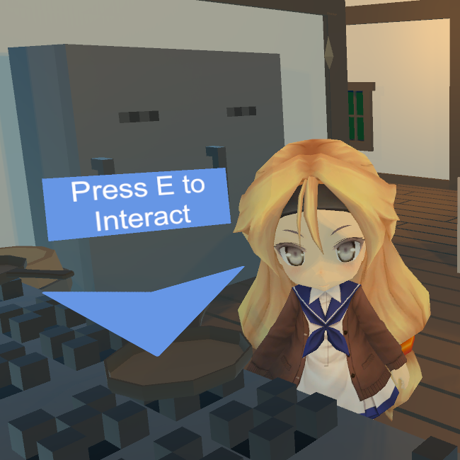
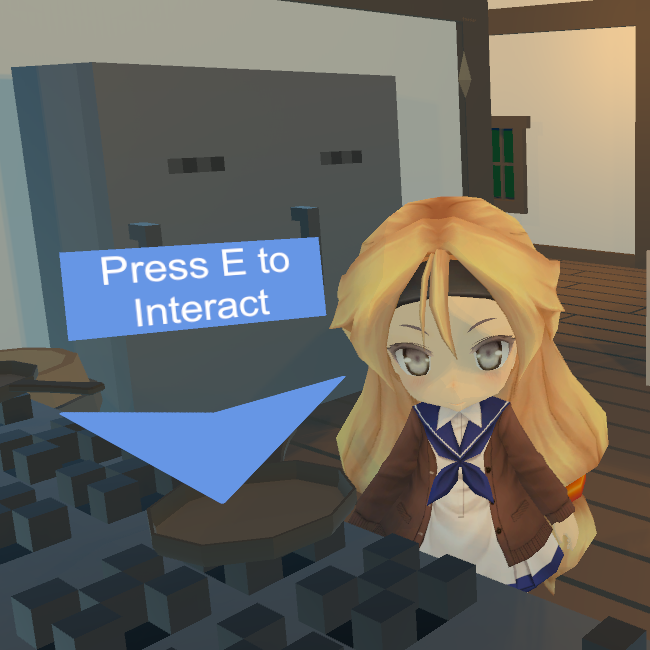

Hello World,
Skylar Liz Beaty
Game Programmer
Hello World,
Game Programmer
See some of my
My most recent project, Conventional Vampires, is part of the Queer Vampire Game Jam on itch.io. It’s a dating sim about someone who goes to a Halloween Convention and quickly gets caught up in the affairs of real vampires attending the con. I led an interdisciplinary team of 15 writers, artists, programmers, and others, to complete the game in a little over a month. I did a majority of the programming, I ran weekly spring meetings with the full team, made documentation for important systems, and I also did a couple one-on-one meetings when another programmer needed unblocking.
The most polished solo project I’ve made has to be Phase Drift, a space shoot 'em up game, designed around basic one button controls. This was made as a three month long project for the last class in the Game Design sequence at Tri-C. The prompt was to make a game throughout the semester, and we were encouraged to upload it publicly at the end. I made it my challenge to make an Android game, with platform integration and monetization by the end of the project. It was later uploaded to iOS and recently Itch.io


learn about my
Took game focused courses such as Game Programming, Computer Graphics, Artificial Intelligence, and Game Engine Concepts. Learned and applied agile development and SCRUM in Software Engineering. Studied various techniques like memory management, version control, and design patterns over the course of my degree.
Took several game design courses where I made quick game projects, iterating on prototypes based on playtest feedback. I took part in an art showcase where I had custom versions of my games running on an arcade cabinet one of the professors built. I also studied 3D modeling, animation, digital media creation, calculus and physics.
Get to know more
Hi ^.^ most people call me Liz. I’ve been making games for about as long as I can remember. I started programming when I was around 12 with Game Maker and GML. Over the years I’ve used a bunch of tools and languages. I’ve been using Unity long enough now that it has gone from numbered release names, to year based release names and is now going back to numbered release names (i.e. 10 years).
I really enjoy gameplay programming, especially making prototypes that iterate on play testing feedback. I’m a huge fan of any game that feels great to play, and I try to make games that are juicy and tactile. I also love working with procedural generation and graphics programming.
When I’m not programming I tend to play a lot of games. I have a weekly Blades in the Dark campaign going on right now. I regularly host board gaming nights. I also run an Ubuntu server to run game servers and automation. I love to go to museums; I’m a member of the NE Ohio Queer Museum Goers. Recently I visited The Broad and the Getty Villa while visiting LA.
The best way to


 
